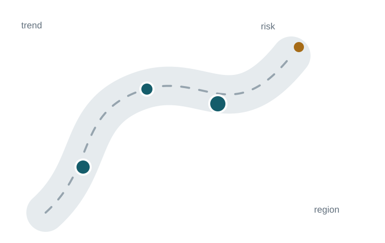

Loading
0
Road safety data · British Columbia
An interactive decision-support project built from public BC road safety data. It connects KPI definitions, vulnerable road users, regional outcomes, trend analysis, and transparent forecasting in one place.

Loading road safety data...
KPI snapshot
Each KPI keeps its year, source, and five-year direction visible so a single number is not mistaken for the full story.
Time series
Road users
Vulnerable road users
Pedestrians, cyclists, and motorcyclists receive a separate view because aggregate totals can hide differences between road-user groups.
Geospatial view
Marker positions are approximate regional anchors, not crash coordinates. Marker size reflects the latest aggregate fatality count.
Transparent forecasting
Recent history is used instead of fitting one line through the entire available series.
The goal is explainability, not a black-box prediction.
This projection does not model policy changes, exposure, population, weather, enforcement, infrastructure, or other causal drivers.
Metric design
A road user who dies within 30 days after injuries from a motor vehicle collision on a public highway, subject to the source exclusions.
A police-attended collision where the officer assesses that a victim will require more than 24 hours of hospitalization.
Police-attended data does not represent every collision, and reporting practices have changed over time.
Aggregate regions support comparison and monitoring, but they should not be treated as precise crash locations.